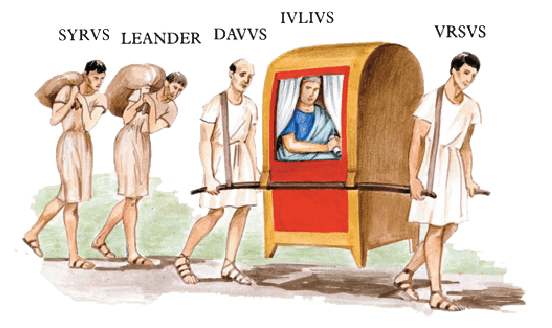

VIA LATÍNA
I
In Italiā multae et magnae viae sunt: via Appia, via Latīna, via Flāminia, via Aurēlia, via Aemilia. Via Appia est inter Rōmam et Brundisium; via Latīna inter Rōmam et Capuam; via Flāminia inter Rōmam et Arīminum; via Aurēlia inter Rōmam et Genuam; via Aemilia inter Arīminum et Placentiam. Brundisium, Capua, Arīminum, Genua, Placentia, Ōstia magna oppida sunt. Ubi est Ōstia? Ōstia est prope Rōmam. Tūsculum quoque prope Rōmam est. Brundisium nōn est prope Rōmam, sed procul ab Rōmā: via Appia longa est. Via Latīna nōn tam longa est quam via Appia. Quam longa est via Flāminia? Neque ea tam longa est quam via Appia. Tiberis fluvius nōn tam longus est quam fluvius Padus.
Circum oppida mūrī sunt. Circum Rōmam est mūrus antīquus. In mūrō Rōmānō duodecim portae sunt. Porta prīma Rōmāna est porta Capēna. Circum oppidum Tūsculum mūrus nōn tam longus est quam circum Rōmam.

Vīlla Iūliī est prope Tūsculum. Ab oppidō Tūsculō ad vīllam Iūliī nōn longa via est. Ecce Iūlius et quattuor servī in viā. Iūlius ab oppidō ad vīllam suam it. Dominus et servī ab oppidō ad vīllam eunt. Dominus in lectīcā est. Duo servī lectīcam cum dominō portant. Servī quī lectīcam portant sunt Ursus et Dāvus. Iūlius nōn in viā ambulat, servī eum portant. Syrus et Lēander ambulant. Syrus saccum portat et Lēander quoque saccum portat: Syrus et Lēander duōs saccōs in umerīs portant. Saccī quōs Syrus et Lēander portant magnī sunt, sed saccus quem Syrus portat nōn tam magnus est quam saccus Lēandrī. Quattuor servī dominum et duōs saccōs ab oppidō ad vīllam vehunt.
Iūlius in lectīcā est inter Ursum et Dāvum. Ursus est ante Iūlium, Dāvus post eum est. Syrus et Lēander nōn ante lectīcam, sed post lectīcam ambulant. Venitne Iūlius ā vīllā? Nōn ā vīllā venit. Unde venit Iūlius? Ab oppidō venit. Quō it Iūlius? Ad vīllam it. Post eum Tūsculum est, ante eum est vīlla.
Iūlius sōlus nōn est, nam quattuor servī apud eum sunt. Mēdus nōn est apud dominum, nam is dominum īrātum timet. Mēdus est malus servus quī nummōs dominī in sacculō suō habet. Dominus servōs malōs baculō verberat, itaque servī malī dominum et baculum eius timent. Dāvus autem bonus servus est, neque is Mēdum amat. Dāvus amīcus Mēdī nōn est, nam servus bonus et servus malus nōn amīcī, sed inimīcī sunt. Mēdus est inimīcus Dāvī. Ursus autem amīcus Dāvī est.
II
Mēdus abest ā dominō suō. Estne in oppidō Tūsculō? Mēdus Tūsculī nōn est; neque Rōmae est Mēdus, sed in viā Latīnā inter Rōmam et Tūsculum. Unde venit Mēdus? Tūsculō venit, neque is ad vīllam Iūliī it. Quō it Mēdus? Rōmam it. Tūsculum post eum est, ante eum est Rōma. Mēdus viā Latīnā Tūsculō Rōmam ambulat.
Etiam Cornēlius, amīcus Iūliī, in viā Latīnā est inter Rōmam et Tūsculum. Unde venit Cornēlius? Is nōn Tūsculō, sed Rōmā venit. Quō it? Cornēlius nōn Rōmam, sed Tūsculum it. Rōma post eum, ante eum Tūsculum est. Cornēlius in equō est. Equus quī Cornēlium vehit pulcher est. Iūlius et Cornēlius ad vīllās suās eunt. Vīlla ubi Iūlius habitat prope Tūsculum est. Ubi habitat Cornēlius? Is Tūsculī habitat.
Iam Iūlius prope vīllam suam est. Servī quī lectīcam portant fessī sunt. Dominus autem fessus nōn est, nam is nōn ambulat. Iūlius ab Ursō et Dāvō portātur, itaque is fessus nōn est. Fessī sunt Syrus et Lēander, nam iī duōs magnōs saccōs umerīs portant, neque vacuī sunt saccī! Saccī quī ā Syrō et Lēandrō portantur magnī sunt, sed saccus quem Syrus portat nōn tam magnus est quam saccus quī ā Lēandrō portātur. Itaque Syrus nōn tam fessus est quam Lēander. Cornēlius nōn est fessus, nam is equō vehitur. Iūlius lectīcā vehitur. Servī ambulant. Dominī vehuntur. Mēdus ambulat, nam is servus est neque equum habet.
Iūlius prope vīllam suam est. Mēdus autem, quī dominum īrātum timet, procul ā vīllā Iūliī abest. Dominus ā servō malō timētur. Mēdus prope Rōmam est; iam mūrī Rōmānī ab eō videntur et porta Capēna. (Is quī viā Latīnā venit per portam Capēnam Rōmam intrat.) Cūr Rōmam it Mēdus? Rōmam it, quia Lȳdia Rōmae habitat, nam Lȳdia amīca eius est: Mēdus Lȳdiam amat et ab eā amātur. Mēdus Rōmam vocātur ab amīcā suā, quae fēmina est pulchra et proba. Itaque is fessus nōn est et laetus cantat: Nōn via longa est Rōmam, ubi amīca habitat mea pulchra. Sed id quod Mēdus cantat ā Lȳdiā nōn audītur!
Iam Iūlius in vīllā est et ab Aemiliā līberīsque laetīs salūtātur. Cornēlius Tūsculī est. Mēdus autem Rōmae est ante ōstium Lȳdiae. Mēdus ōstium pulsat.
Lȳdia imperat: “Intrā!”
Mēdus per ōstium intrat et amīcam suam salūtat: “Salvē, mea Lȳdia! Ecce amīcus tuus quī sōlus Rōmam ad tē venit.”
Lȳdia verbīs Mēdī dēlectātur eumque salūtat: “Ō amīce, salvē! Ubi est dominus tuus?”
Mēdus: “Iūlius in vīllā est apud servōs suōs — neque is iam meus dominus est!”
Verba Mēdī ā Lȳdiā laetā audiuntur.
* * *
GRAMMATICA LATÍNA
Praepositiōnēs
Iūlius ad vīllam it; ad oppidum; ad ancillās.
Ursus ante Iūlium est; ante eum; ante vīllam.
Dāvus post Iūlium est; post eum; post vīllam.
Via inter Rōmam et Capuam; inter servōs.
Ōstia est prope Rōmam; prope vīllam; prope eam.
Circum oppidum mūrus est; circum mēnsam.
Mēdus est apud amīcam suam, nōn apud dominum.
Mēdus per portam Capēnam Rōmam intrat; per ōstium.
Ab, ad, ex, cēt. sunt praepositiōnēs. Praepositiōnēs cum accūsātivō: ad, ante, post, inter, prope, circum, apud, per, cēt.; praepositiōnēs cum ablātīvō: ab/ā, cum, ex, in, sine, cēt. (vidē cap. V).
Quō it Mēdus? Mēdus Rōmam it. Quō it Cornēlius? Is Tūsculum it.
Unde venit Cornēlius? Cornēlius Rōmā venit. Unde venit Mēdus? Is Tūsculō venit.
Ubi habitat Lȳdia? Lȳdia Rōmae habitat. Ubi habitat Cornēlius? Is Tūsculī habitat.
Accūsātīvus: Rōmam, Tūsculum, Capuam, Brundisium, Ōstiam = ad oppidum -am/-um.
Ablātīvus: Rōmā, Tūsculō, Capuā, Brundisiō, Ōstiā = ab oppidō -ā/-ō.
Locātīvus (= genetīvus): Rōmae, Tūsculī, Capuae, Brundisiī, Ōstiae = in oppidō -ae/-ō.
Verbum āctīvum et passīvum
Servus saccum portat. = Saccus portātur ā servō.
Servī saccōs portant. = Saccī portantur ā servīs.
‘Portat’, ‘portant’ verbum āctīvum est. ‘Portātur’, ‘portantur’ est verbum passīvum. Actīvum: -t, -nt. Passīvum: -tur, -ntur.
Exempla:
[1] -ātur, -antur:
Aemilia Iūlium amat et ab eō amātur. Pater et māter līberōs amant et ab iīs amantur. Lȳdia verbīs Mēdī dēlectātur.
[2] -ētur, -entur:
Iūlia puerōs nōn videt neque ab iīs vidētur. Puerī Iūliam nōn vident neque ab eā videntur.
[3] -itur, -untur:
Dāvus sacculum in mēnsā pōnit: sacculus in mēnsā pōnitur ā Dāvō. Puerī rosās in aquā pōnunt: rosae ā puerīs in aquā pōnuntur. Cornēlius equō vehitur.
[4] -ītur, -iuntur:
Iūlia puerōs audit neque ab iīs audītur: puerī ā Iūliā audiuntur neque eam audiunt.